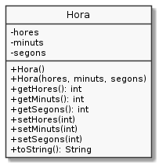

Exercici 05_07. La classe Hora amb excepcions¶
Exercici 05_07. La classe Hora amb excepcions¶
Context
Carpeta de lliurament:
05_07_hores_excepcionals/Continguts relacionats: Excepcions
Com lliurar-lo: instruccions
[✓] Exercici amb autoavaluació
Enunciat
Toca fer una nova versió de la classe Hora. En aquesta ocasió farem ús
del mecanisme d’excepcions.

Afegeix el control d’errors amb excepcions allà on els usuaris de la
classe puguin passar-li valors no vàlids. Els setters retornaran void.
En cas d’error, els mètodes retornaran excepcions amb els missatges:
«Hora(«hores», «minuts», «segons») fora de rang»
«Hora.setHores(«hores») fora de rang»
«Hora.setMinuts(«minuts») fora de rang»
«Hora.setSegons(«segons») fora de rang»
El següént programa haurà de funcionar. Et caldrà implementar el mètode
canviaHora() que bàsicament intentarà assignar les hores, minuts i
segons rebuts a la instància de “”Hora``:
1 2 3 4 5 6 7 8 9 10 11 12 13 14 15 16 17 18 19 20 21 22 23 | public class UsaHora {
private static void canviaHora(Hora hora, int hores, int minuts, int segons) {
// XXX TODO: encara no implementat
}
public static void main(String[] args) {
Hora hora = new Hora();
System.out.println("Inicialment " + hora);
System.out.println("Si intentem assignar a hores un -1");
canviaHora(hora, -1, hora.getMinuts(), hora.getSegons());
System.out.println("El valor resultant és " + hora);
System.out.println();
System.out.println("Si intentem assignar a minuts un -1");
canviaHora(hora, hora.getHores(), -1, hora.getSegons());
System.out.println("El valor resultant és " + hora);
System.out.println();
System.out.println("Si intentem assignar a segons un -1");
canviaHora(hora, hora.getHores(), hora.getMinuts(), -1);
System.out.println("El valor resultant és " + hora);
System.out.println();
}
}
|
El resultat d’executar el programa anterior serà:
$ java UsaHora
Inicialment 0:00:00
Si intentem assignar a hores un -1
java.lang.Exception: Hora.setHora(-1) valor fora de rang
El valor resultant és 0:00:00
Si intentem assignar a minuts un -1
java.lang.Exception: Hora.setMinuts(-1) valor fora de rang
El valor resultant és 0:00:00
Si intentem assignar a segons un -1
java.lang.Exception: Hora.setSegons(-1) valor fora de rang
El valor resultant és 0:00:00